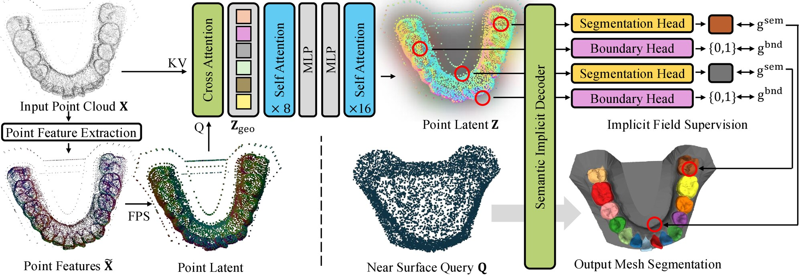
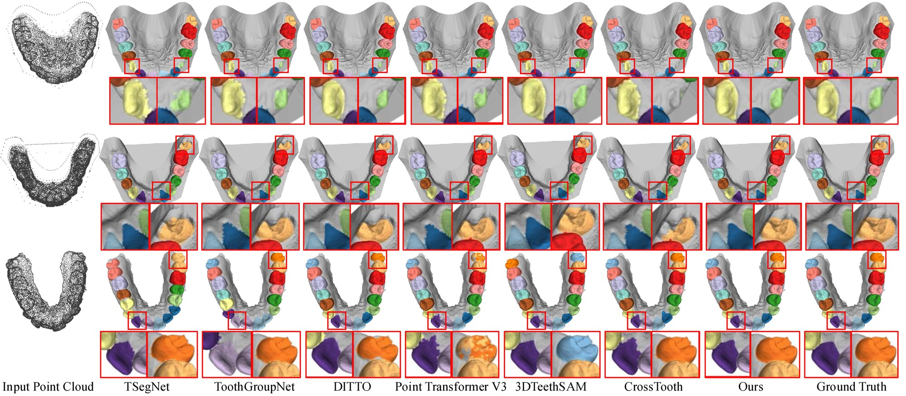
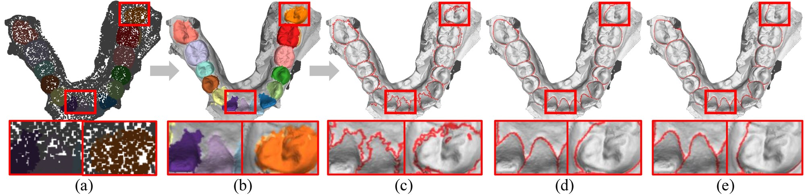
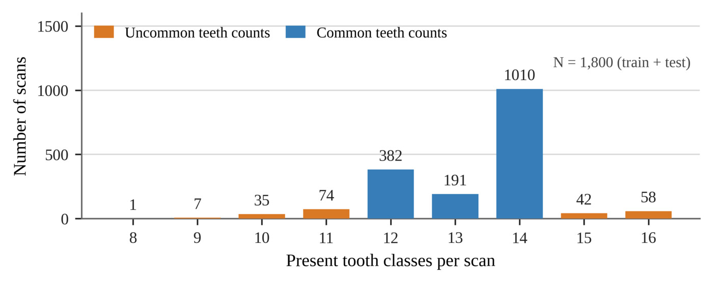
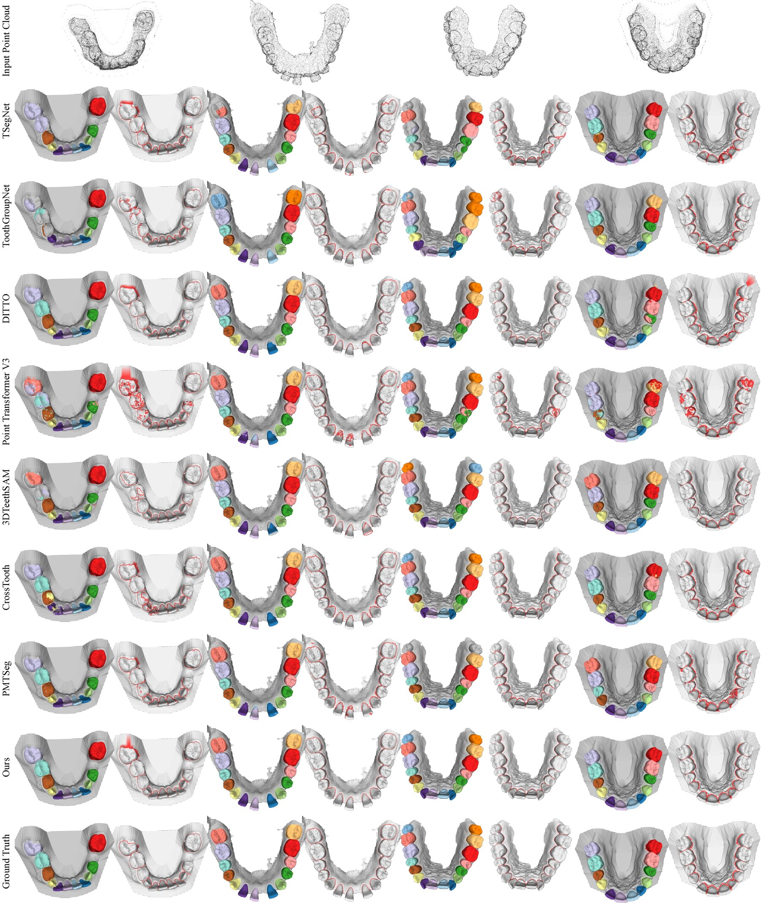

Accurate tooth segmentation from 3D intraoral scans requires precise inter-tooth and tooth–gingiva boundaries over the complete mesh surface. Existing methods often predict labels only at sampled points or processed mesh elements and rely on label propagation for dense output, which can degrade fine surface boundaries. We introduce DentiField, which adapts the pretrained geometry encoder and decoder of TripoSG to learn a surface semantic field for tooth segmentation. To bridge the mismatch between pretrained volumetric prediction and surface-defined dental semantics, DentiField samples near-surface queries independently of the encoder sampling and derives their semantic and boundary targets from the annotated mesh through closest-surface projection. At inference, each scan is encoded once, and the learned field is evaluated directly at mesh vertices without label propagation. On the official Teeth3DS+ test split, DentiField achieves 87.70% mIoU and 87.65% B-Dice@0.2, outperforming the compared methods in semantic segmentation and complete surface boundary correspondence. Ablations validate the benefits of pretrained initialization and surface-local query supervision.

| Method | Type | OA | T-mIoU | mIoU | DSC | B-IoU | B-Dice@0.2 | B-F1@0.2 |
|---|---|---|---|---|---|---|---|---|
| TSegNet | Point | 83.87 | 66.39 | 65.61 | 72.65 | 54.32 | 54.64 | 57.88 |
| ToothGroupNetwork | Point | 89.94 | 77.47 | 76.66 | 80.45 | 70.27 | 66.04 | 69.43 |
| Point Transformer V3 | Point | 92.10 | 82.84 | 80.97 | 86.43 | 71.73 | 65.38 | 70.34 |
| DITTO | Implicit | 92.40 | 84.12 | 82.36 | 87.62 | 73.07 | 74.47 | 77.68 |
| 3DTeethSAM | Image | 92.52 | 85.45 | 84.25 | 88.96 | 75.71 | 81.84 | 84.54 |
| CrossTooth | Point | 94.20 | 88.06 | 86.97 | 90.94 | 79.77 | 73.60 | 78.04 |
| PMTSeg† | Point | 94.08 | 87.65 | 86.50 | 90.38 | 78.84 | 72.63 | 77.08 |
| DentiField (ours) | Implicit | 94.44 | 88.47 | 87.70 | 91.63 | 80.67 | 87.65 | 89.63 |
Mean over the official test scans (%). B-IoU measures point-cloud boundary agreement within 2 mm; B-Dice and B-F1 evaluate complete mesh-surface boundaries at a 0.2 mm tolerance. †PMTSeg is reproduced with mesh-rendered images because Teeth3DS+ has no real oral photographs. Standard deviations and the 0.1 mm boundary metrics are reported in the paper.

Predictions and ground truth are rendered on the complete surface mesh; red boxes mark inter-tooth regions, magnified below each result.

(a) CrossTooth point-level prediction and (b) its transferred mesh segmentation. (c–e) Segmentation boundaries from the transferred CrossTooth prediction, DentiField, and ground truth. Fine boundaries are lost during point-to-mesh transfer, whereas DentiField predicts at mesh vertices directly.

Distribution of present tooth counts in Teeth3DS+ (1,800 scans). Most scans have 12–14 present teeth; uncommon samples (orange) contain 9–11 or 15–16 present teeth.
| Method | OA | T-mIoU | mIoU | DSC | B-IoU | B-Dice@0.2 | B-F1@0.2 |
|---|---|---|---|---|---|---|---|
| DITTO | 86.98 | 74.63 | 70.46 | 76.35 | 60.80 | 59.80 | 63.04 |
| 3DTeethSAM | 86.32 | 75.80 | 71.77 | 76.09 | 64.25 | 69.72 | 71.72 |
| CrossTooth | 90.10 | 81.47 | 78.52 | 82.45 | 71.57 | 65.43 | 69.53 |
| DentiField (ours) | 90.87 | 83.08 | 80.74 | 84.40 | 74.37 | 81.03 | 82.57 |
Mean over the 71 test scans with 9–11 or 15–16 present teeth (%). DentiField performs best on every metric, with the largest margin on mesh-level boundary metrics.

Additional comparisons with the baselines. DentiField predicts tooth categories consistent with the ground truth and produces clear inter-tooth and tooth–gingiva boundaries.
@inproceedings{shim2027dentifield,
title = {DentiField: Implicit Surface Semantic Field for Intraoral Mesh Segmentation},
author = {Shim, Jaehyeok and Ham, Soomin and Joo, Kyungdon},
booktitle = {Proceedings of the IEEE/CVF Winter Conference on Applications of Computer Vision (WACV)},
year = {2027}
}